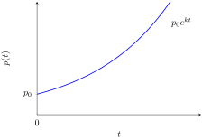
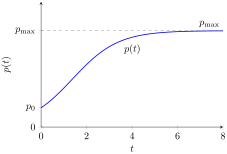

We model the growth of a population (for example, a colony of bacteria).
(a) Simple proportional growth. In the simplest case, the growth rate is proportional to the current population size. Let \(p(t)\) denote the population at time \(t\text{.}\) This assumption translates directly into the equation
\begin{equation*}
p'(t) = k \, p(t),
\end{equation*}
where \(k\) is the proportionality constant. The unknown is the function \(p\text{;}\) the equation involves both \(p\) and its derivative \(p'\text{.}\) This is a first-order ordinary differential equation, and its solutions describe exponential growth: \(p(t) = p_0 \, e^{kt}\text{.}\)

(b) Logistic growth. A more realistic model assumes that the population approaches a maximum value \(p_{\max} = 1\) (normalised to \(100\%\)). The growth rate is proportional both to the current population and to the remaining capacity \(1 - p(t)\text{:}\)
\begin{equation*}
p'(t) = k \, p(t) \, (1 - p(t)).
\end{equation*}
This is again a first-order ODE, but its solutions exhibit an S-shaped (sigmoidal) curve: slow initial growth, rapid growth near \(p = 0.5\text{,}\) and levelling off as \(p \to 1\text{.}\)
